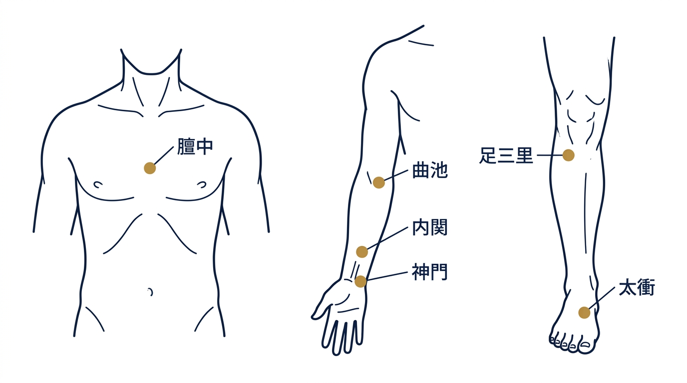

肝型糖原病の鍼灸
肝臓でグリコーゲンを合成・分解する酵素の異常により低血糖や肝腫大を起こす遺伝性疾患です。専門医の食事管理を最優先とします。


院長YouTube解説・関連動画
糖原病の中でも、肝臓の腫れや低血糖を発症することのある糖原病
肝型糖原病は、糖原病の中でも、肝臓が腫れたり、低血糖を起こしたりする糖原病のことです。成人期になると、肝硬変や肝腫瘍を発症することもあります。
肝型糖原病は遺伝性の病気です。発症する年齢は様々で、発症には性別は関係ありませんが、IX型の一部は男性にのみ発症するものがあります。
糖原病は、生まれた時からグリコーゲンが合成され分解される経路に障害が起きる病気です。
肝型糖原病は、働く酵素の異常によって種類が違います。種類ごとの名前には数字での番号と発見した人の名前がついています。最も多いタイプはIX型で、成長すると症状が軽くなるということがわかっています。
肝型糖原病では、主に低血糖と肝臓の腫れが現れる
肝型糖原病の症状は病型によって違いますが、主に低血糖と肝臓の腫れが現れます。
特にI型は、糖原病の中では低血糖と肝臓の腫れが強く出ます。場合によっては、酸血症を発症することもあります。丸顔で頬がぽっちゃりしたり成長障害が起こったり高脂血症や高尿酸血症などが起こることもあります。
Ib型の場合は好中球の減少、IV型は肝硬変や肝不全、脾腫、III型は低血糖や肝臓の腫れ、心筋症などの症状が現れます。VI型やIX型は症状が比較的軽いことが多いです。
色々な合併症を発症することもあります。低血糖発作を繰り返すことで発達が遅れたり、他にもてんかんや肝腫瘍などを発症したりすることがあるのです。
肝型糖原病は、肝臓の糖代謝の障害によって引き起こされる希少な遺伝性の病気です。この病気は、さまざまな症状を引き起こし、生活に重大な影響を及ぼすことがあります。以下に、肝型糖原病の一般的な症状について詳しく説明します。
低血糖（低血糖症）：肝型糖原病の最も一般的な症状の一つは、低血糖（低血糖症）です。正常な糖代謝が妨げられるため、血糖値が常に低い状態が続きます。低血糖は、頭痛、めまい、倦怠感、ふらつき、集中力の低下などの症状を引き起こすことがあります。重度の低血糖は、意識障害やけいれんを引き起こす可能性もあります。
成長遅延：肝型糖原病では、成長に遅れが見られることがあります。栄養が不足するため、身長や体重の増加が遅くなることがあります。成長ホルモンの正常な分泌や利用が阻害される可能性があります。
肝腫大：肝型糖原病では、肝臓が腫大することがあります。肝臓のサイズが正常を超えるため、腹部の膨満感や圧迫感を引き起こすことがあります。肝臓の腫大は、腹部の痛みや不快感をもたらすこともあります。
筋肉の弱点や筋力低下：肝型糖原病では、筋肉の弱点や筋力低下を経験することがあります。疲労感や運動能力の低下が見られる場合もあります。これは、正常なエネルギー供給が妨げられるため、筋肉の機能が低下することによるものです。
脂肪肝：肝型糖原病では、肝臓に脂肪が異常に蓄積することがあります。脂肪肝は肝臓の機能を低下させ、肝細胞の異常を引き起こす可能性があります。脂肪肝は腹部の不快感や膨満感を引き起こすこともあります。
血液異常：肝型糖原病では、貧血や血小板の減少などの血液異常が見られることがあります。これは、肝臓が正常な造血機能を果たせないために起こる可能性があります。
法令輪周囲の黄色化：肝型糖原病では、黄疸が見られることがあります。これは、肝臓の機能低下によりビリルビンが正常に代謝されないためです。黄疸は皮膚や目の白い部分の黄色化を引き起こすことがあります。
血中アミノ酸の異常：肝型糖原病では、血中のアミノ酸の異常が見られることがあります。これは、肝臓がアミノ酸の正常な代謝を行えないために起こる可能性があります。
これらは肝型糖原病の一般的な症状の一部ですが、症状は個人によって異なる場合があります。また、症状の重症度や進行の速度も異なる場合があります。
肝型糖原病の根本的な改善方法はありません。主に行われている改善方法は、食事の改善です。
基本的に低血糖を予防するために血糖値を維持することが改善の目標になります。そのために乳糖やショ糖除去、果糖の制限を行なったり、特殊ミルク、コーンスターチを夜中に繰り返し摂ったりすることを続けます。
場合によっては肝移植が行われることもあります。他にも、糖原病ミルクが効果的であると言われています。
肝型糖原病は、肝臓における糖代謝の障害によって引き起こされる遺伝性の病気です。この病気は生涯にわたって継続的な管理と改善を必要とします。以下に、肝型糖原病の改善法について詳しく説明します。
適切な栄養管理：肝型糖原病の改善には、栄養管理が重要な要素です。特定の食事制限や栄養補助食品の摂取が必要です。炭水化物摂取量や食事のタイミングを調整することで、血糖値の安定化と低血糖の予防を図ります。栄養士との協力が重要であり、個別に合わせた栄養計画を作成することが必要です。
糖分補給：低血糖症の予防や対処のために、糖分補給が重要です。特定の状況や活動の前後には、砂糖や果糖などの糖分を含む飲み物や食品を摂取することが推奨されます。また、重度の低血糖症の場合には、経口または静脈内にブドウ糖を投与することがあります。
薬：一部の肝型糖原病では、特定の薬が使用されます。例えば、グルコース-6-ホスファターゼ酵素（G6Pase）の欠陥によるグリコーゲン貯蔵病I型（von Gierke病）では、グルコース-6-ホスファターゼ酵素の欠陥を補うための補酵素（Glycogeninhibitor）が使用されることがあります。適切な薬は、個々の症例に基づいて専門医が判断します。
肝移植：重度の肝型糖原病や合併症のある場合には、肝移植が考慮されることがあります。肝臓の移植により、正常な酵素機能を持つ肝臓を提供し、病気を管理することが可能となります。肝移植は高度な手術であり、移植候補者としての適格性が評価されます。
改善法の組み合わせ：
特定の症例では、複数の改善法を組み合わせることが必要となる場合があります。例えば、特定の食事と薬を併用することで、症状の管理と血糖値の制御を向上させることができます。専門医との定期的なフォローアップにより、最適な計画を立てることが重要です。
必要なサポート：肝型糖原病の改善には、継続的なチームのサポートが不可欠です。専門医（小児科医、内科医、代謝専門医など）、栄養士、看護師、心理学者などが協力し、適切な改善とサポートを提供します。教育プログラムや情報リソースへのアクセスも重要です。
肝型糖原病の改善方法は個人によって異なる場合があります。病気の進行の度合いや合併症の有無、個々の遺伝子変異の種類などに応じて計画が立てられます。
空腹になると低血糖が起こってしまいます。特に食事と食事の間の時間が空いた場合は、注意してください。乳幼児の場合、低血糖の症状をきちんと理解して気づくことができるようにしておくことが大事です。
肝型糖原病では、定期的に病院に通って指導を受けることが必要です。改善のための食事も長い期間続けることが大事です。根気よく改善を続けることが大事なのです。
肝型糖原病の改善例
例1：グリコーゲン貯蔵病I型の改善例
小さな男の子、太郎くんは、生後間もなく低血糖の症状が現れ、グリコーゲン貯蔵病I型（von Gierke病）と判断されました。太郎くんの計画は、食事管理、特定の薬物的な方法、そして定期的なフォローアップで構成されています。
まず、太郎くんの食事は、糖分とエネルギーの供給を安定化させるために重要です。栄養士によって特別な食事計画が作成され、高炭水化物・低脂肪・中タンパク質の食事が提案されました。定期的な食事スケジュールと、就寝前にもスナックを摂ることで低血糖を予防するため、両親は注意深く管理を行いました。
また、太郎くんは補酵素（Glycogeninhibitor）を使用しています。補酵素は、グルコース-6-ホスファターゼ酵素（G6Pase）の欠陥を補うための薬剤であり、食事だけでは補えないグルコースの供給を補完します。太郎くんの補酵素の投与量とタイミングは、専門医の指導のもとで調整されました。
太郎くんの健康状態は定期的にモニタリングされ、状況に応じて計画が調整されました。成長や発育に関する問題がある場合には、成長ホルモンの補充療法が検討されることもあります。太郎くんの成長は、定期的に調べて評価され、必要に応じて改善が調整されました。
例2：グリコーゲン貯蔵病III型（コリ酸病）の改善例
女性花子さんは幼少期から体力低下や筋力の低下に悩んでいました。グリコーゲン貯蔵病III型（コリ酸病）と判断され、計画が立てられました。
花子さんの改善方法は、特定の食事管理と適切な運動をすることで構成されています。食事は糖分とタンパク質のバランスを考慮し、適切なエネルギー供給を確保するために管理されました。また、低血糖の予防のために、花子さんは糖分補給食品を携帯するように指導されました。
運動は、筋力の低下を遅らせるために重要です。花子さんは専門家と協力し、筋力トレーニングと適度な運動を行って筋肉を強化しました。適切な運動は、個々の症例に合わせて調整され、定期的なフォローアップによって効果が評価されました。
花子さんは、モニタリングされ、症状の進行や合併症の有無に応じて、計画が調整されました。花子さんと彼女の家族は、病気の理解と管理のための教育を受け、専門医やチームと緊密に連携しながら改善に取り組んできました。
これらは肝型糖原病の改善の例の一部です。個々の症例は異なるため、計画は状態や症状の進行に合わせてカスタマイズされます。
▼ 詳しく知りたい項目だけタップして開けます（全項目の医学解説を収録）
01. 原因とメカニズム
なぜ症状が起きるのか・鍼灸の作用機序を読む
▼
01. 原因とメカニズム
なぜ症状が起きるのか・鍼灸の作用機序を読む
糖質をエネルギー源として蓄えたり取り出したりするグリコーゲン代謝経路の酵素に遺伝的な異常があり、主に肝臓の腫れ（肝腫大）や空腹時の低血糖を引き起こす病気です。欠損する酵素の種類によりIa型、Ib型、III型、IX型などに分類され、成人期には肝硬変や肝腫瘍などの合併症に注意が必要なタイプもあります。低血糖を防ぎ成長・健康を守るため、専門医と管理栄養士のもとでの継続的な食事療法と定期検査が不可欠です。
なぜ鍼灸で改善へ向かうのか？（作用機序の図解）
肝型糖原病に対する鍼灸は、心拍変動・血管トーンを整える自律神経サポート機序を通じて、お体本来の回復力を引き出します。
循環器専門医の標準治療を絶対前提とし、手首や背部の安全な経穴へ低刺激でアプローチします。
心臓への過剰な交感神経刺激を穏やかに鎮め、心拍リズムと血管緊張の急変を抑えます。
ストレスで固まりやすい胸郭や横隔膜の緊張を解き、酸素摂取とリラックス反応を促します。
内服管理を厳守しながら、疲労やストレスが引き金となる症状不安の軽減を支えます。
02. よくあるお悩み
このような症状はありませんか？（4項目）
▼
02. よくあるお悩み
このような症状はありませんか？（4項目）
- ✓空腹時に低血糖症状（ふらつき・冷や汗・だるさ）が出やすい
- ✓肝臓の腫れやお腹の張りを指摘されている
- ✓慢性的な体力低下や筋力低下、疲れやすさが気になる
- ✓長期にわたる食事管理のストレスや体のこわばりを和らげたい
03. 当院の施術アプローチ
施術の進め方・改善のポイントを見る
▼
03. 当院の施術アプローチ
施術の進め方・改善のポイントを見る
04. ツボ詳細・セルフケア一覧
循環器・動悸・高血圧・心不全補助の全身ツボ図解（6穴）
▼
04. ツボ詳細・セルフケア一覧
循環器・動悸・高血圧・心不全補助の全身ツボ図解（6穴）
実際の施術ではお一人おひとりの体質・症状に合わせて選穴しますが、動悸・不整脈・本態性高血圧・慢性心不全の循環器治療併用サポートの臨床でよく用いられる代表的なツボの目安です。
| ツボ名 | 位置の目安 | 主な狙い | セルフケアの注意点 |
|---|---|---|---|
| 内関（ないかん） | 手首の横ジワから指3本分肘寄りの中央 | 動悸・不整脈・狭心症補助で最も研究されている心包経の要穴 | 胸痛・冷や汗・失神がある場合は直ちに救急受診してください。 |
| 膻中（だんちゅう） | 胸の中央（胸骨上） | 胸のつかえ・交感神経の高ぶり・不安感の鎮静 | 強く押さず手のひらで温めながら深呼吸します。 |
| 神門（しんもん） | 手首の横ジワの小指側のくぼみ | 心拍の落ち着き・緊張性の動悸と不眠ケア | ペースメーカー使用時は電気鍼を避け手技のみで行います。 |
| 曲池（きょくち） | 肘を曲げた外側のシワの先端 | 血圧変動に伴う上肢・頭部の緊張緩和 | 降圧薬・心不全薬の自己判断での中止は厳禁です。 |
| 足三里（あしさんり） | 膝の下外側、指4本分下 | 末梢循環・自律神経バランスとQOL維持 | 身体負担の少ない穏やかな低刺激で行います。 |
| 太衝（たいしょう） | 足の甲、親指と人差し指の骨の間 | ストレス性の血圧上昇・末梢血管収縮の緩和 | 就寝前の優しい指圧でリラックスを促します。 |
05. 医学的根拠・国際査読論文（PubMed / Cochrane）
科学的エビデンス・出典リンク一覧（4件）
▼
05. 医学的根拠・国際査読論文（PubMed / Cochrane）
科学的エビデンス・出典リンク一覧（4件）
国際的な医学データベース（PubMed・Cochrane等）で報告されている動悸・不整脈・本態性高血圧・慢性心不全の循環器治療併用サポート領域の代表的な査読済み鍼灸研究をまとめています（標準治療との併用や研究上の限界を含めて正確に掲載）。
| 年・研究デザイン | 対象・規模 | 主な結果 | 限界・出典 |
|---|---|---|---|
| 2019年 大規模多施設RCT | 慢性安定狭心症 398名解析（標準薬物療法併用） | 16週時点の4週間発作減少は実鍼群がシャム群比5.18回・待機群比5.63回多く有意改善（P<0.001）。 | 標準薬物療法への併用（補完）試験であり単独療法ではない。 JAMA Intern Med (PMID: 31355870) |
| 2007年 シャム対照RCT | 本態性高血圧 140名完了（ドイツ・24時間ABPM） | 治療終了時の24時間血圧はシャム比SBP -6.4mmHg・DBP -3.7mmHg有意低下（P<0.001）。 | 終了3〜6か月で治療前水準へ戻るため継続ケアが必要。 Circulation (PMID: 17548730) |
| 2015年 メタ解析 | 高血圧 23 RCTs（n=1,788） | 降圧薬＋実鍼は降圧薬＋シャム比でSBP -7.47mmHg・DBP -4.22mmHg有意低下。鍼単独は降圧薬と同等・根拠不十分。 | 盲検化・異質性に課題。降圧薬の自己中断は厳禁。 PLoS One (PMID: 26207806) |
| 2025年 メタ解析 | 心拍変動（HRV）10 RCTs（n=744） | 自律神経全体の適応指標SDNNを有意に改善、重篤な有害事象なし。 | LF・HFには不確実性が高くさらなる検証が必要。 Front Neurosci (PMID: 41230507) |
参考文献・出典
- 2019年 大規模多施設RCT（慢性安定狭心症 398名解析（標準薬物療法併用））— JAMA Intern Med (PMID: 31355870)
- 2007年 シャム対照RCT（本態性高血圧 140名完了（ドイツ・24時間ABPM））— Circulation (PMID: 17548730)
- 2015年 メタ解析（高血圧 23 RCTs（n=1,788））— PLoS One (PMID: 26207806)
- 2025年 メタ解析（心拍変動（HRV）10 RCTs（n=744））— Front Neurosci (PMID: 41230507)
06. よくある質問（FAQ）
よくあるご質問を見る（2件）
▼
06. よくある質問（FAQ）
よくあるご質問を見る（2件）
Q. 肝型糖原病で通院中ですが、鍼灸を受ける際の注意点はありますか？
必ず主治医の許可を得たうえで、空腹により低血糖を起こさないよう食事や補食のタイミングに合わせてご来院ください。念のため普段携帯している糖分補給食品をご持参いただくと安心です。
Q. 鍼灸で低血糖や肝臓の腫れを治せますか？
酵素の遺伝的な異常そのものを鍼灸で治すことはできません。専門医での食事管理と定期検査を基本とし、安定期の疲労感や筋緊張・ストレスの緩和を目的とした補完的ケアとしてご利用ください。
あわせて読まれる関連疾患（循環器のお悩み）
先天的な酵素異常で有害なイソ吉草酸が蓄積する希少な代謝異常症です。専門医での食事管理・早期点滴を最優先とし、安定期の体調を穏やかに支えます。
好酸球の異常増加により全身の細い血管に炎症が生じる指定難病です。専門医の長期治療を最優先とし、寛解・安定期のしびれや緊張を穏やかにケアします。
原因不明の慢性炎症と複数リンパ節の腫脹を特徴とする指定難病です。専門医の薬物治療と感染予防を最優先に、安定期の体調ケアを補完します。
腎臓や肺・神経などの小型血管に炎症が起こる指定難病です。ステロイド・免疫抑制治療を最優先とし、寛解・安定期の体調管理を補完的に支えます。
電子伝達フラビン蛋白の異常で脂肪酸代謝が障害される指定難病です。食事間隔の厳守と専門医管理が最優先で、安定期の筋疲労等を穏やかにケアします。
特定のアミノ酸代謝酵素の異常により中枢神経障害を起こす指定難病です。専門医の食事・薬物管理が最優先で、安定期の筋緊張等を穏やかにケアします。
CLINICAL RECOVERY CASES
✨ 実際の臨床改善事例・回復経過を見る
銀座本院をはじめ各院での実際の改善事例を症状別に絞り込んでご確認いただけます。
おひとりで悩まず、まずはご相談ください
銀座本院・川口・大宮・横浜・博多・田無の各院でご予約を承っております。